十六羅漢岩/山形県遊佐町
遊佐町は鳥海山を望む山形県最北の町だ。
そんな町の隠れた名所がここ、十六羅漢岩。
日本海に面した海岸にその羅漢岩はある。道の駅などもあり、観光客のロングドライブの休憩スポットとなっており意外とにぎわっている。
こんな感じです。
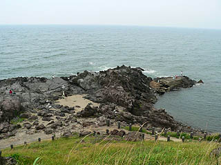
えっ？羅漢岩はどこだって？
もう少し近寄ってみましょう。
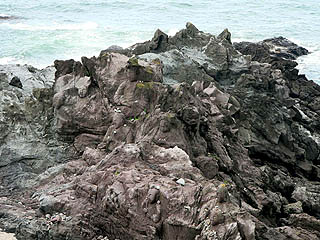
まだわからない？では角度を変えて。
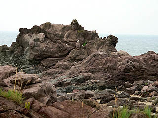
ホラ、ね。
柔らかい石に彫り込んであるので、まるで心霊写真並みに探すのが大変なのだ。
うっかりすると羅漢さんを見落としそうになるのだが、そこを丹念にまわって全キャラを発見するのが、ここ、十六羅漢岩の楽しみ方とお見受けしたぞ。
では早速,羅漢オリエンテーリングへ行って来ます。
フランスにあるLes Rochers Sculptesを彷佛とさせる自然と人工物が融合した不思議な風景だ。
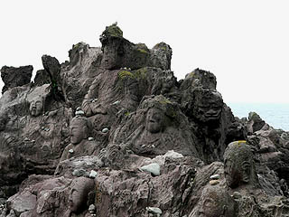 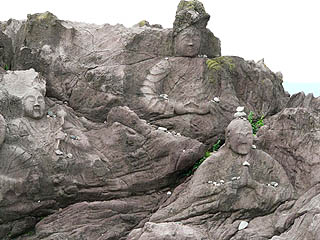
この十六羅漢岩、寛海和尚なる人物が、元治元（1864）年に発願し、明治元（1868）年に完成させた彫像である。
十六羅漢の他に釈迦牟尼、文殊菩薩、普賢菩薩、観音、舎利仏、木蓮の像があり総勢22体が日本海の荒波に対峙しているのだ。
日本海の荒波で命を失った漁師諸霊の供養と安全祈願を願って彫刻されたという。
まあ、どれがどの羅漢さんかを説明してもあまり意味がないので全部の説明は省略するが、一体一体の石像はそれぞれ違う表情や仕種をしておりそれなりに個性的に造られている、みたい。
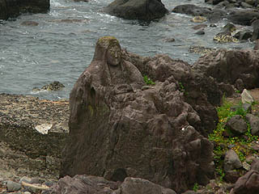
↓右のお方が賓度羅跋羅惰闍尊者。いわゆるおびんずる様である。
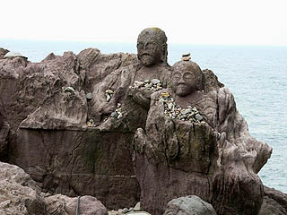
羅漢像の配置は主にフリースタイルな型と五百羅漢寺などに代表される並び型とある。
十六羅漢は比較的フリースタイルが多く見られるが、さすがに500人もいると「ハイ、白線の内側に2列になってお並び下さ〜い」てな事になるのだろう。
というわけでここのは十六羅漢なので地形を生かしたフリースタイル群像という形式を採っている。
これが勢い余って五百羅漢でも彫ったひには海岸線に並んで一直線に整列！てな具合になりかねないが、逆にフリースタイルゆえ海岸を歩いて探し出す楽しみがあるのだ。
結構ウォーリーを探せみたいで面白かったっす。
少し離れた岩の上には観音様が刻まれていた。
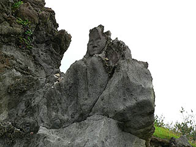 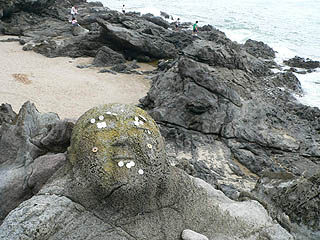
顔面に賽銭というのも如何なものだろう。
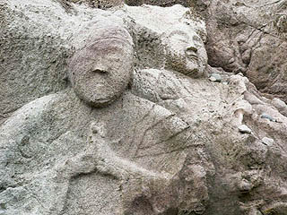 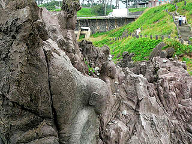
中に動物が混ざっていた。これは普賢菩薩の獅子。
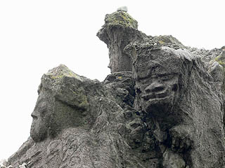 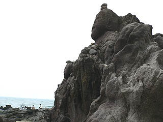
中には摩滅しているものもある。比較的柔らかい石ゆえむべなるかな。
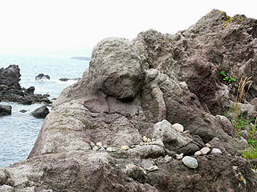 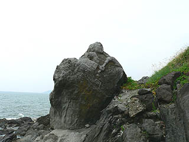
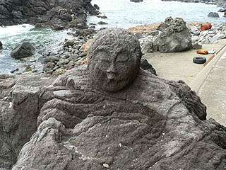
一番強烈だったのは護岸工事によって身体半分コンクリートに隠れてしまっていた羅漢さん。
何だか窮屈そうなポジショニングで海の安全を祈っている。
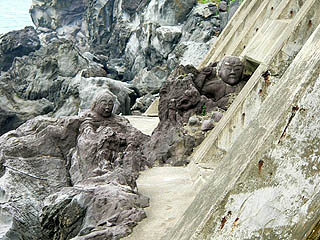
ハンタカ尊者の前にだけ小さな仏像と供え物とロウソクがあった。
これはコンクリの壁に囲まれてていて可哀想だから、というのではなくここなら供え物も雨風はしのげるからだと思う。
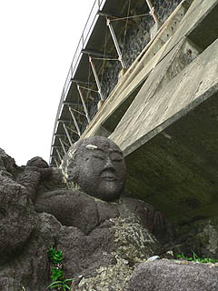 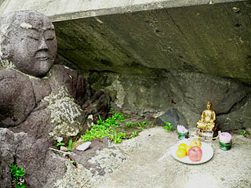
さらにコンクリートの壁の中に完全に呑み込まれちゃっている羅漢さんも。
護岸工事の際に羅漢さんが彫られているのでわざわざココだけ崖面を残したのだろう。御苦労さまでした。
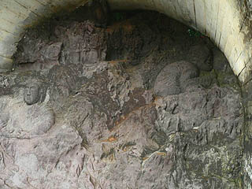
壁の中にいるのは那伽犀那尊者と伐闍羅弗多羅尊者。伐闍羅弗多羅尊者はかなり甘えん坊と見たぞ。
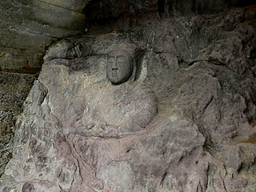 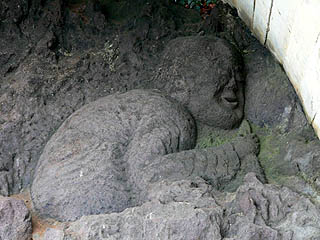
さて、羅漢さんといえば最大のお楽しみは羅怙羅尊者。
お釈迦様の息子でもある羅怙羅尊者は自分の肚を自らの手で開き、その中に仏様が居る事でその男気を示したという逸話を持つ伝説の尊者だ。
果たしてここの羅怙羅さんは男気を示しているのだろうか？
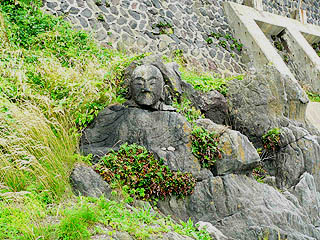
あっ、示してませんでした・・・
ま、潮風は身体に悪いっていいますからね。
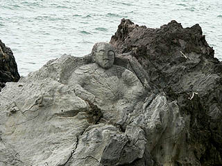 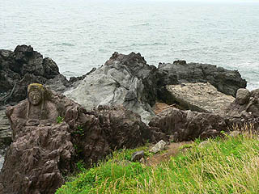
そんなこんなで十六羅漢プラスその親方集を全て見てまわった。
しかしよ〜く数えてみると21体しか見ていない事に気付く。
あと1体は何だったんでしょう？未だに判りません。噂では海上からしか見えない羅漢さんがいるとかいないとか・・・
情報提供は庄内おばこさんです。
2005.7.
珍寺大道場 HOME